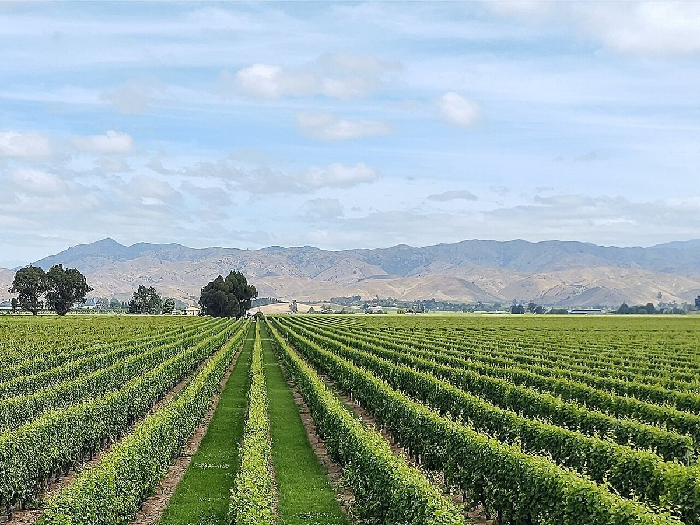

Nuova Zelanda
La Nuova Zelanda è un produttore di dimensioni contenute e di clima fresco che si è fatto conoscere nel mondo con il Sauvignon Blanc di Marlborough. Oggi si distingue anche per i Pinot Nero di Central Otago e di Martinborough e per i rossi di Hawke’s Bay.

Storia
Le prime viti della Nuova Zelanda furono piantate nel 1819 dal missionario Samuel Marsden a Kerikeri, all’estremo nord dell’Isola del Nord. Negli anni Trenta dell’Ottocento James Busby, che in precedenza aveva promosso la viticoltura in Australia, produsse vino a Waitangi. Nel 1851 missionari maristi fondarono a Hawke’s Bay la cantina oggi nota come Mission Estate, considerata la più antica del paese ancora in attività. Tra la fine dell’Ottocento e l’inizio del Novecento immigrati dalmati, provenienti dall’attuale Croazia, aprirono piccole cantine nei dintorni di Auckland, e diverse delle aziende di famiglia da loro fondate sono ancora attive.
Per buona parte del Novecento il settore rimase piccolo e si concentrò su vini fortificati e bianchi semplici, frenato anche dalla fillossera, dai movimenti proibizionisti e da leggi restrittive sulla vendita di alcolici. La grande trasformazione iniziò negli anni Settanta. Nel 1973 l’azienda Montana piantò i primi vigneti commerciali a Marlborough, nel nord dell’Isola del Sud, e tra la fine di quel decennio e gli anni Ottanta i Sauvignon Blanc della regione, intensamente aromatici, attirarono l’attenzione internazionale. Nello stesso periodo il Müller-Thurgau, che era stato il vitigno più diffuso, cedette gradualmente il passo ai grandi vitigni francesi. Dagli anni Ottanta e Novanta il Pinot Nero si è affermato a Martinborough e a Central Otago, e il paese si è costruito una solida reputazione come produttore di vini di clima fresco.
Clima e suoli
La Nuova Zelanda si estende per circa 1.500 chilometri da nord a sud, con vigneti situati all’incirca tra i paralleli 36 e 45 sud. Nessun punto del paese è molto lontano dal mare, per cui il clima è in prevalenza marittimo e fresco, con una lunga stagione di maturazione, grande luminosità e intensa radiazione ultravioletta. Le notti fresche preservano l’acidità e gli aromi dell’uva. Fa eccezione Central Otago, nell’interno dell’Isola del Sud, dal clima continentale con estati calde e secche e inverni freddi. Molti vigneti si trovano su suoli alluvionali giovani, di ghiaie e limi depositati dai fiumi; vi sono anche argille, loess e, a Central Otago, suoli derivati dallo scisto.
Vitigni e stili
Il Sauvignon Blanc è di gran lunga il vitigno più coltivato e la base della maggior parte delle esportazioni. Lo stile di Marlborough, vivace e molto aromatico, con note di agrumi, frutto della passione ed erba appena tagliata, è diventato un riferimento mondiale. Il Pinot Nero è la principale uva rossa e dà vini dal frutto puro e dai tannini fini a Martinborough, Marlborough, Central Otago e altre zone. Si producono inoltre Chardonnay in diverse regioni, Pinot Grigio, Riesling e spumanti metodo classico. A Hawke’s Bay, la più calda tra le grandi regioni, si producono uvaggi di stile bordolese a base di Merlot e Cabernet Sauvignon, oltre a Syrah di stile fresco e speziato.
Normativa e pratiche
La Nuova Zelanda dispone di un registro delle indicazioni geografiche che tutela i nomi delle sue regioni vinicole, ma non impone vitigni né metodi di vinificazione. Il settore si è distinto per un forte impegno verso la sostenibilità, organizzato attorno al programma Sustainable Winegrowing New Zealand, e per l’adozione molto precoce e quasi generale del tappo a vite, promossa dal 2001 da un’iniziativa dei produttori del paese.
Regioni e denominazioni
Marlborough
Indicazione geografica (GI) · Marlborough, all’estremità nord-orientale dell’Isola del Sud, è la più grande regione vitivinicola della Nuova Zelanda. Il suo Sauvignon Blanc intensamente aromatico ha dato fama internazionale al vino neozelandese.
Central Otago
Indicazione geografica (GI) · Central Otago, nell’interno montuoso del sud dell’Isola del Sud, è una delle regioni vitivinicole più meridionali del mondo e l’unica della Nuova Zelanda con clima continentale. È celebre per il suo Pinot Nero.
Hawke's Bay
Indicazione geografica (GI) · Hawke’s Bay, sulla costa orientale dell’Isola del Nord, è una delle più antiche regioni vitivinicole della Nuova Zelanda e la principale per i rossi di stile bordolese e il Syrah.
Martinborough
Indicazione geografica (GI) · Martinborough, nel sud della regione di Wairarapa, sull’Isola del Nord, è una piccola zona vitivinicola che è stata pioniera del Pinot Nero di qualità in Nuova Zelanda.